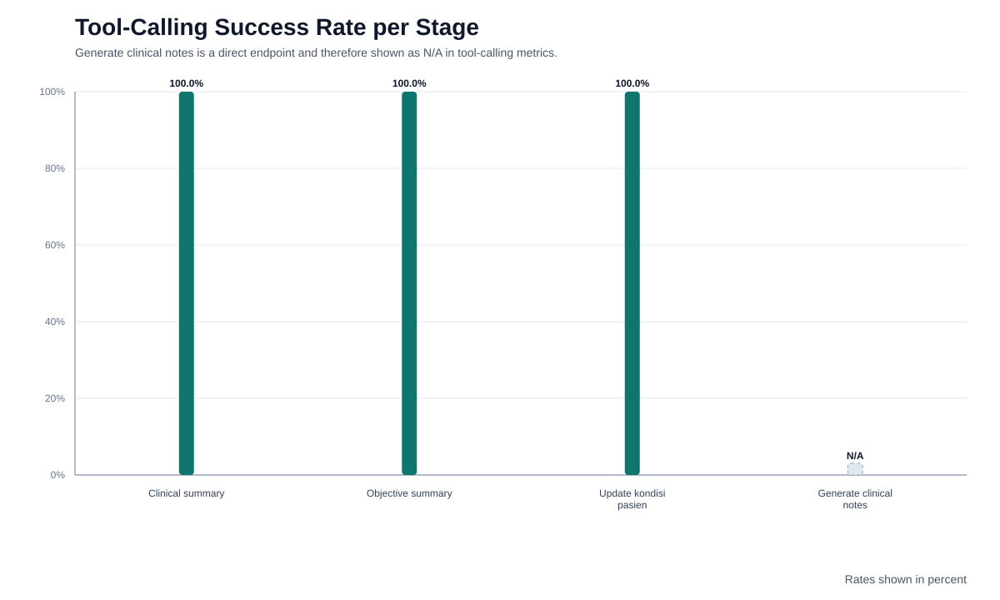
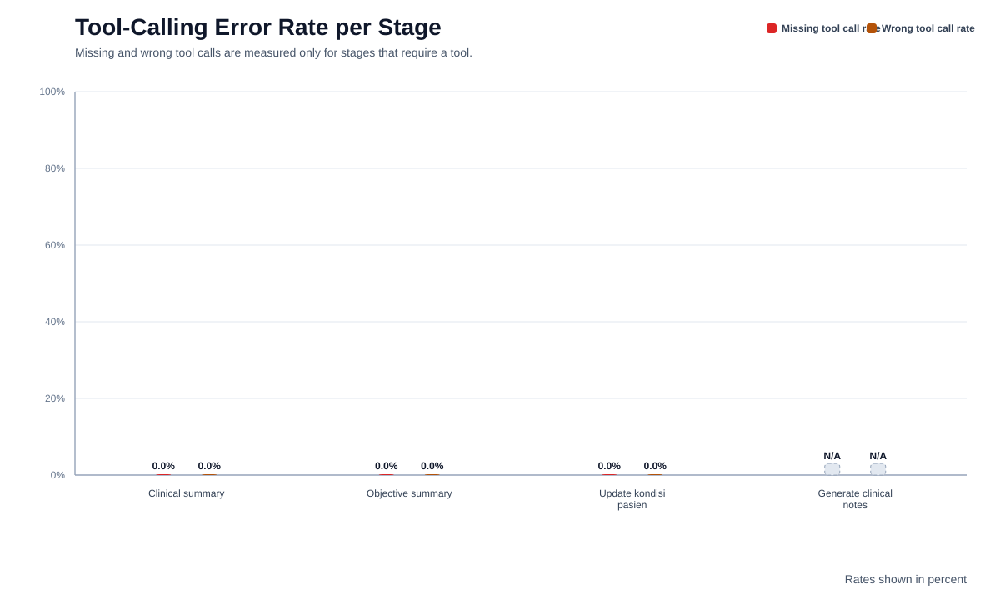
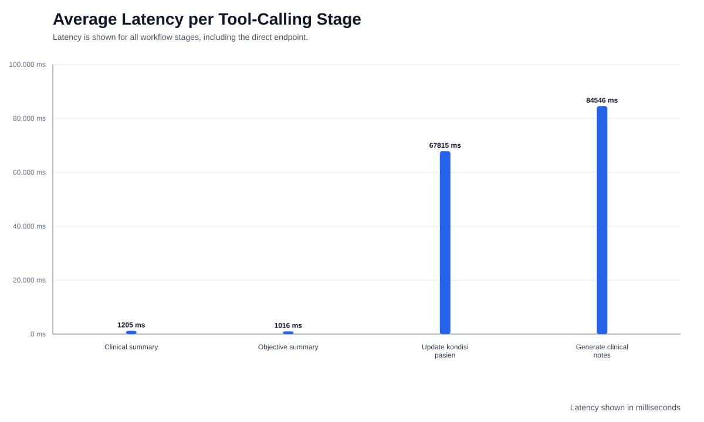

The tool-calling performance test was conducted using 30 nurse workflow executions. Clinical summary, objective summary, and update kondisi pasien each achieved 100.0% tool-calling success with 0.0% wrong tool calls and 0.0% missing tool calls across the required stages. Generate clinical notes is implemented as a direct endpoint (Direct endpoint / N/A) and is therefore reported as N/A for tool-calling metrics while still contributing to task success and latency analysis. Across tool-required stages, the weighted average latency was 23346 ms; the overall average across all stages was 38646 ms.
evaluation/results/workflow_results.jsonSuccess rate, error rate, and latency views used for the paper figures.



Main table for paper insertion.
| Workflow Stage | Expected Tool | Total Cases | Correct Tool Calls | Missing Tool Calls | Wrong Tool Calls | Tool-Calling Success Rate | Task Success Rate | Average Latency |
|---|---|---|---|---|---|---|---|---|
| Clinical summary | clinical_summary | 30 | 30 | 0 | 0 | 100.0% | 100.0% | 1205 ms |
| Objective summary | external_examinations_objective_summary | 30 | 30 | 0 | 0 | 100.0% | 100.0% | 1016 ms |
| Update kondisi pasien | clinical_notes_chat_update | 30 | 30 | 0 | 0 | 100.0% | 100.0% | 67815 ms |
| Generate clinical notes | Direct endpoint / N/A | 30 | N/A | N/A | N/A | N/A | 100.0% | 84546 ms |
Quick view of each nurse run and latency.
| Nurse | Patient | Doctor | Summary | Objective | Update | Avg Latency |
|---|---|---|---|---|---|---|
| arga | Budi Santoso | dr. Afzal Haqqi | OK | OK | OK | 31024 ms |
| nisa | Ayu Lestari | dr. Andooon | OK | OK | OK | 20651 ms |
| rafi | Rizal Maulana | dr, Haqqi Afzal | OK | OK | OK | 26008 ms |
| dinda | Maya Permata | dr. Ridhooo | OK | OK | OK | 25900 ms |
| bagas | Dimas Prakoso | dr. Andooon | OK | OK | OK | 29532 ms |
| putri | Sari Wulandari | dr. Afzal Haqqi | OK | OK | OK | 30263 ms |
| ilham | Hendra Wijaya | dr. Ridhooo | OK | OK | OK | 42444 ms |
| ratih | Nina Safitri | dr, Haqqi Afzal | OK | OK | OK | 46919 ms |
| fajar | Agus Kurniawan | dr. Afzal Haqqi | OK | OK | OK | 25306 ms |
| tiara | Rina Anggraini | dr. Ridhooo | OK | OK | OK | 23136 ms |
| galih | Fahmi Hidayat | dr. Andooon | OK | OK | OK | 17231 ms |
| anisa | Lia Kartika | dr, Haqqi Afzal | OK | OK | OK | 22711 ms |
| rizky | Teguh Saputra | dr. Ridhooo | OK | OK | OK | 36607 ms |
| fitri | Vina Maharani | dr. Afzal Haqqi | OK | OK | OK | 27963 ms |
| yudha | Yusuf Akbar | dr, Haqqi Afzal | OK | OK | OK | 38451 ms |
| linda | Tika Amelia | dr. Andooon | OK | OK | OK | 40596 ms |
| arif | Fajar Nugroho | dr. Afzal Haqqi | OK | OK | OK | 42972 ms |
| vina | Dewi Cahyani | dr, Haqqi Afzal | OK | OK | OK | 50701 ms |
| faris | Rangga Setiawan | dr. Ridhooo | OK | OK | OK | 39064 ms |
| desi | Anisa Rahma | dr. Andooon | OK | OK | OK | 45316 ms |
| alif | Iqbal Ramadhan | dr, Haqqi Afzal | OK | OK | OK | 40459 ms |
| intan | Putri Noviana | dr. Afzal Haqqi | OK | OK | OK | 55806 ms |
| hafiz | Bayu Firmansyah | dr. Andooon | OK | OK | OK | 53174 ms |
| dewi | Citra Damayanti | dr. Ridhooo | OK | OK | OK | 54877 ms |
| ridwan | Ilham Pratama | dr. Afzal Haqqi | OK | OK | OK | 39418 ms |
| melati | Nadia Fitriani | dr. Ridhooo | OK | OK | OK | 49787 ms |
| farhan | Arif Rahman | dr, Haqqi Afzal | OK | OK | OK | 55967 ms |
| ayu | Sinta Melani | dr. Andooon | OK | OK | OK | 53465 ms |
| fikri | Galih Wicaksono | dr. Ridhooo | OK | OK | OK | 57355 ms |
| zahra | Zahra Oktavia | dr. Afzal Haqqi | OK | OK | OK | 36276 ms |